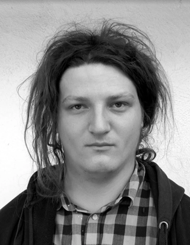

Kontakt

Kdo jsem?
Z takového toho formálního hlediska by se dalo říct, že jsem
Budějčák - narodil jsem se a vyrostl v Českých Budějovicích
Absolvent FSI VUT vystudoval jsem bc. na oboru Aplikovaná informatika a řízení
Absolvent FEL ČVUT vystudoval jsem Ing. na oboru Inteligentní budovy, integrovaném oboru mezi FEL, FSv a FS ČVUT
31 let starý
Držitel řidičského průkazu skupiny A a B
Důležitější jsou pak asi následující životní role:
Jsem programátor
V pracovním a částečně i osobním životě se věnuji práci programátora, převážně na pozici tzv. Fullstack developera. V posledních letech se primárně věnuji vývoji v oblasti energetiky, kde momentálně působím jako tech lead nebo spíše řečeno jako hlavní programátor na projektech souvisejících se systémem vyrovnávání rovnováhy energetické sítě a nově také v oblasti nastupující komunitní energetiky.
Mimo tuto hlavní pracovní náplň také působím na NTK v oddělení permanentních identifikátorů, kde je mojí pracovní náplní pomoc se správou repozitářového systému DSpace a konzultace týkající se API třetích stran, jako je například DataCite.
Jsem produkční
Na pozici technického produkčního jsem se v průběhu posledních cca deseti let účastnil velkého množství projektů různých velikostí. Z těch významějších to byl zejména Budějovický Majáles, který je svým rozsahem pravděpodobně největší dobrovolnicky organizovaný kulturní festival v České republice, od prvního ročníku v roce 2014 do roku 2018 jsem působil v organizačním týmu Díky, že můžem - korzo národní, který je zodpovědný za oslavy výročí Sametové revoluce na národní třídě, nyní je mou hlavní kulturní náplní festival Beseda u Bigbítu, kde desátým rokem působím na pozici technického ředitele.
Jsem cyklista
Na kole trávím co nejvíce času, dříve zejména horské, nyní se však postupně přes gravel posouvám spíše k silniční cyklistice.
Býval jsem muzikant, nebo jsem si to alespoň myslel
Dříve jsem měl kapelu Dětim sumce, dnes ji, asi bohudík, již nemám, i když ještě občas děláme ostudu na svatbách našich přátel. V kapele jsem hrával na bicí, kterýžto nástroj na mě tak nějak zbyl, když nás napadlo, že bychom si mohli kapelu založit. Kdybychom uměli hrát, mohli jsme být slavní.
Díky pracovní benevolenci ve volném čase dost cestuji, v poslední době se snažím lítat co nejdál, ale ze všeho nejradši už navždy asi budu mít Albánii a balkán celkově.
KISK
Na KISK jsem se hlásil v covidovém období, kdy jsem původně chtěl dostudovat magisterské studium na FSI VUT odkud mám bakaláře. Vzhledem ke struktuře oborů na FSI by to však znamenalo studovat spoustu nezajímavých předmětů a tak jsem své studijní nadšení přesměroval směrem ke KISKu, který se mi jevil jako dobrá humanitní nástavba na má předchozí studia a práci.
Před začátkem studia mě nejvíce zajímal návrh UX a UI a design služeb obecně, ale během studia jsem se postupně spíše přeorientoval na datový management.
Z KISKu si toho odnáším hodně, kdybych měl vypíchnout pár předmětů, které mě opravdu zaujali tak by to byl Projektový management, Literatura a kulturní areály a také všechno co se informačních věd a teorie informace týče, byť asi nemohu říct, že bych všemu rozuměl.
Tuto stránku O Mě jsem pro účely SZZ updatoval, níže však nechávám původní verzi tak, jak jsem ji sepsal v roce 2021 na začátku studia. Narodil a vychoval jsem se v Českých Budějovicích, ale momentálně jsem zakotven v Brně.
Vystudoval jsem Aplikovanou informatiku na FSI VUT a Inteligentní budovy na FEL ČVUT. Pracuji jako fullstack developer.
Mimo práci vcelku hodně cestuji, jezdím na kole a občas taky přiložím ruku k dílu na nějakém festivalu. V posledních letech je to zejména Beseda u Bigbítu, dříve třeba Budějovický Majáles nebo Díky, že můžem - korzo národní.
Ještě na gymnáziu jsem míval kapelu, ale o tom se ve slušné společnosti nemluví.